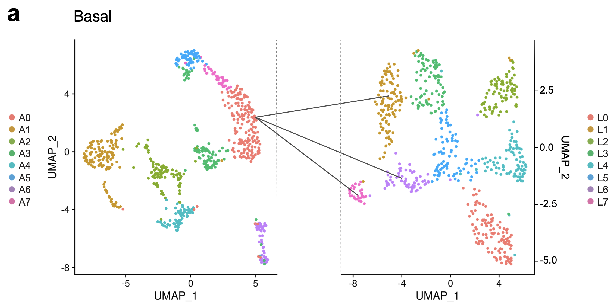
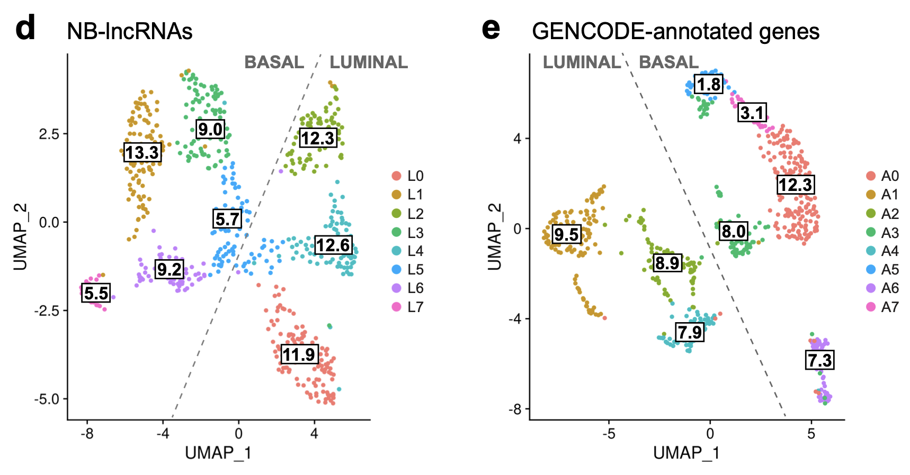
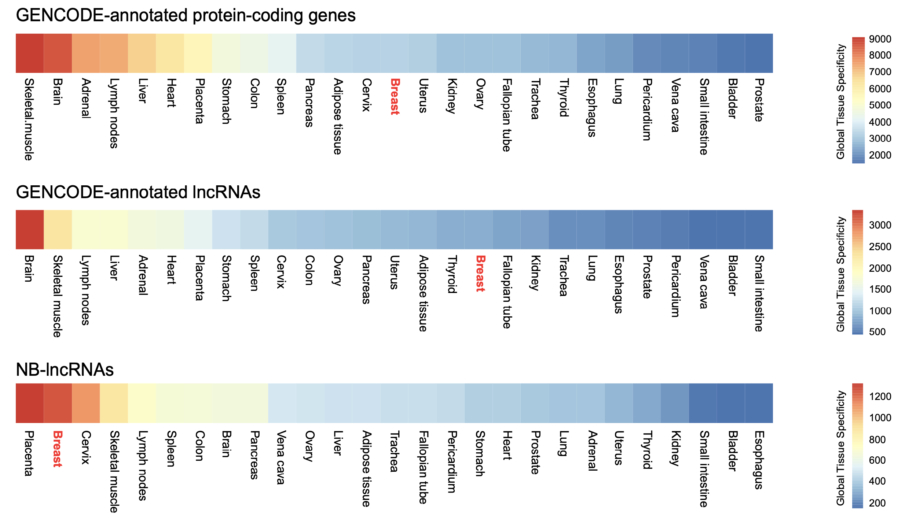
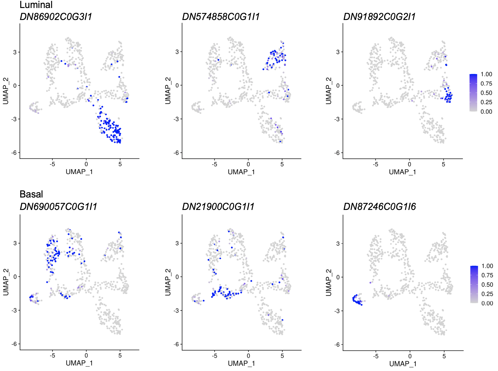
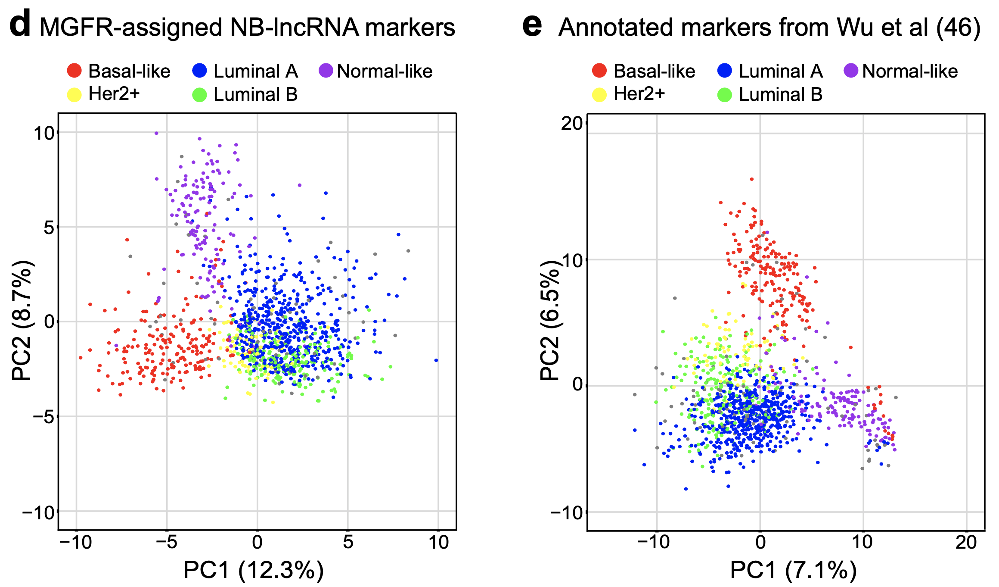

Redefining normal breast cell populations using long noncoding RNAs
Mainá Bitar , Isela Sarahi Rivera, Isabela Almeida, Wei Shi, Kaltin Ferguson, Jonathan Beesley, Sunil R Lakhani, Stacey L Edwards, Juliet D French
Nucleic Acids Research, gkad339, https://doi.org/10.1093/nar/gkad339

We discovered >13,600 lncRNAs expressed in normal breast epithelial cells (normal breast lncRNAs; NB-lncRNAs) that are not in existing databases. To the best of our knowledge, this is the most comprehensive transcriptome of the healthy mammary gland to date.

We demonstrated that the expression of the NB-lncRNA alone can distinguish different cell populations in the normal breast. In fact, singlecell clustering based on the expression of NBlncRNAs has revealed subpopulations of cells from the basal component which GENCODEannotated genes failed to discern.

Using a metric we defined and named cluster specificity index (CSI), we were able to show that NB-lncRNA expression was more cluster-specific than GENCODE-annotated gene expression, and therefore could better define the resulting clusters and the cell subpopulations they represent

We also showed that NB-lncRNA expression was tissue-specific and failed to correctly identify brain cell subpopulations. This observation highlights the need to annotate tissue-specific lncRNAs prior to expression analyses.

We identified NB-lncRNA markers of different mammary epithelial cell subpopulations.

Finally, we identified NB-lncRNA markers of breast tumour subtypes. We further defined a panel of 100 NB-lncRNAs (most unannotated) that performed better than previously defined protein-coding gene markers in identifying the different subtypes of breast tumors in TCGA.
Contact
| Functional Genetics Lab | 2023